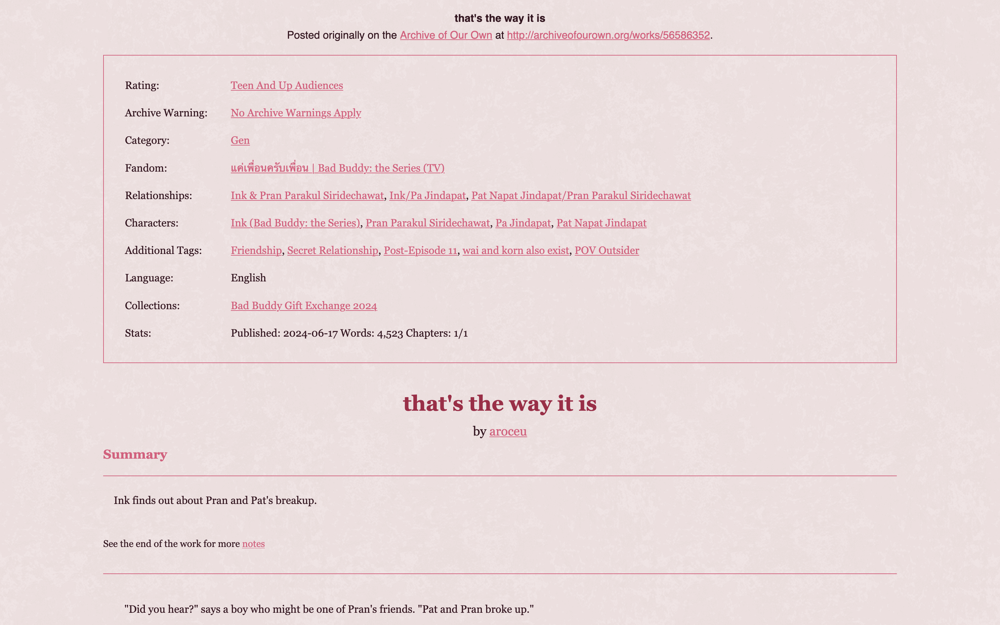
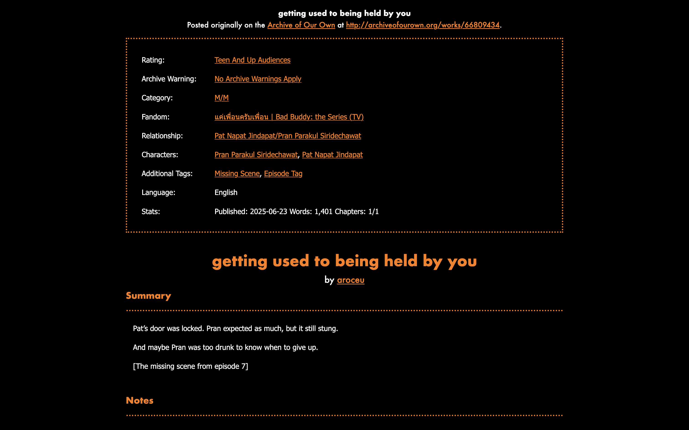

ao3-style.css
What is this?
A pre-written stylesheet for fics from AO3 directly downloaded as .html files.
Previews:
Who is this for?
Fanfiction writers who would like to upload their fanfiction that they've already uploaded to AO3 to an independent website, such as ones hosted by Neocities, Nekoweb, or Teacake.
Though AO3 conveniently has your fic converted from webpage to a viewable .html
file, it's not exactly the prettiest. Or most readable, depending on who you are. (See
this page as an unstyled example.)
For writers who are concerned with such things, this stylesheet is an easy and quick solution to that while also making the backup of your fanfiction on your own site styled to your personal tastes.
How can I use it?
- Select all + copy ao3-style.css and paste it into your own
ao3-style.cssfile. Alternatively, you can download the page as-is. - Download your fics from AO3 in HTML format. Put them in the same folder as
ao3-style.css - This can be done by going to: AO3 Fic Page > Download > HTML, or
- Using the ao3downloader python script made by nianeyna.
- Open each fic
.htmlfile in your text editor. (You don't have to do them all at once, but you will need to repeat this step for all of them eventually.)- Copy this code:
- At the top of the
.htmlfile from line 7 to line 22, there should be this code:<style type="text/css"> p.message { text-align: center; } .meta h1 { font-size: 1.5em; text-align: center; } .meta h2 { font-size: 1.25em; text-align: center; } .meta h2 { page-break-before: always; } .meta .byline { text-align: center; } .meta dl.tags { border: 1px solid; padding: 1em; } .meta dd { margin: -1em 0 0 10em; } .meta .endnote-link { font-size: .8em; } /* List child related works under the labeling dt */ #afterword .meta dd { margin: 1em 0 0 1em; } #chapters { font-family: "Nimbus Roman No9 L", "Times New Roman", serif; padding: 1em; } .userstuff { font-family: "Nimbus Roman No9 L", "Times New Roman", serif; padding: 1em; } /* Invisible headings to help Calibre make a Table of Contents */ .toc-heading { display: none; } </style> - Select it all, and replace it by pasting the code you copied earlier. Do this for all of your fic.
<link rel="stylesheet" href="ao3-style.css"> <!-- this adds the stylesheet --> <meta name="viewport" content="width=device-width, initial-scale=1"> <!-- this allows the stylesheet for mobile/tablets to work -->
- Now you can style! Open
ao3-style.cssin your text editor. - Change everything in the
:root {}brackets to your heart's content.- You will need to be familiar with hex color codes and using fonts in CSS, but everything else should be self-explanatory.
- You can test your changes by opening any of your fic's
.htmlfiles in your web browser. - If you aren't seeing the changes right away, hard refresh (shift+ctrl+R on most browsers) to clear your cache.
- You can also check your code against the samples (see above) to make sure everything looks good.
- Upload the folder containing your fic
.htmlfiles as well as yourao3-style.cssto your website. Then you're done!
Can you show me some customization examples?
All customization can be done by modifying only the variables under :root{} in ao3-style.css.


What else should I check out?
The stylesheet as well as the previews are available on Github.
You might be interested in the masterlist template I made.
This site is part of magpies, my index of fannish webpage resources.